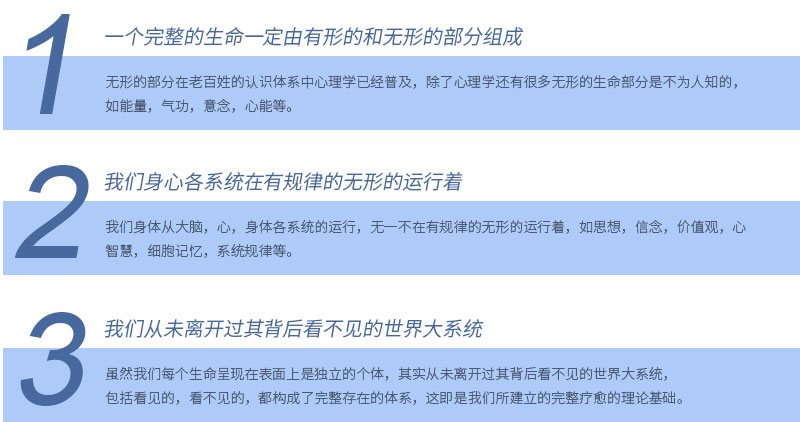

完整疗愈健康管理中心
通过生物电，生物共振，能量学，心理等方法，综合对客人进行细胞层面的保养，尤其是线粒体ATP层面上的保养。
我们的完整疗愈健康管理中心24小时为社区的每一个人带来安心，让有各种问题的人士相信高质量的医疗服务。
从“果”出发，探知“因”在哪里，以“因”为根本，调节。从生命韵律法则的角度上，一切紊乱都是要回归的，回到生命韵律中!
完整疗愈健康管理中心开设6个先进医疗服务项目：产后服务、细胞治疗、营养医学、基因治疗、生物共振、疾病检测。积极引进 最新的医疗设备，力求提供科学精准完善的治疗服务。
以“微笑、诚挚、效率、专业、追踪和卓越”为工作准则，将切实满足客户的最佳健康状态作为工作的第一目标，不断提高团队服 务质量和服务水平。随时让您享受6S星级的高品质健康服务。
舒适 ：星级标准病检分离健康体检环境
尊贵 ：一对一的专属亲情服务
全面 ：基因医学、生物医学、分子医学、影像医学、心理医学等各类学科检验、检查齐全
权威 ：国际领先的疾病检测技术、与浙江迪安诊断技术等知名机构合作
专业 ：国际化专业医师、健管团队
服务 ：尊荣星级服务，通过ISO90001医疗服务质量认证体系
领先 ：基因检测、功能医学、云平台各方面技术国内领先水平